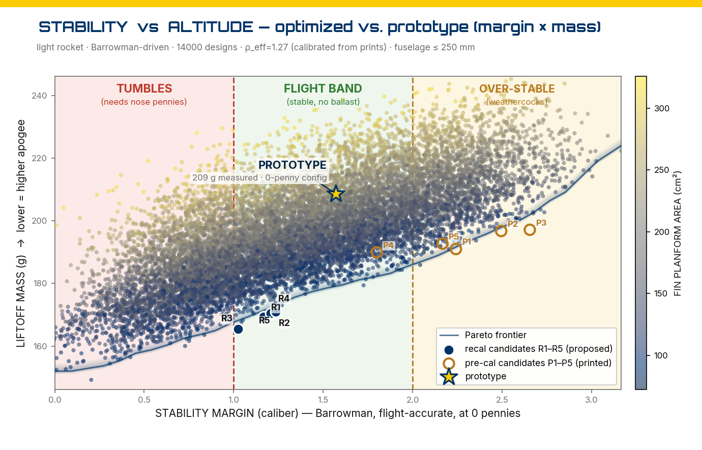
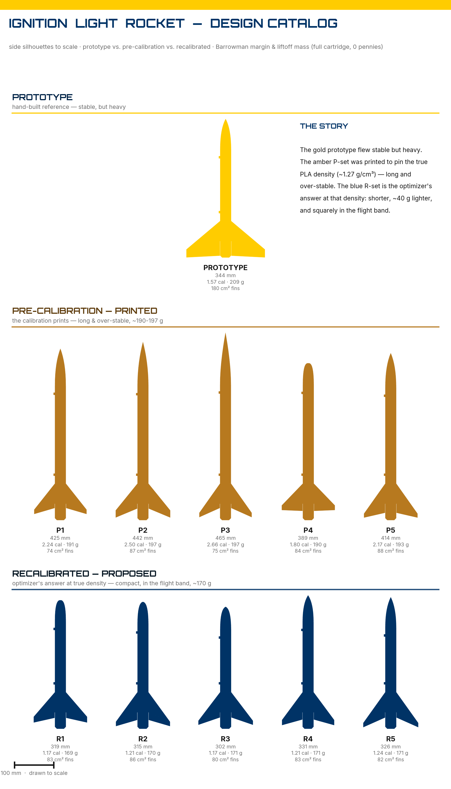

How simply can a rocket be built — 3D printed, powered by a CO₂ cartridge, carrying its own avionics — and how much do you actually have to understand to get it off the pad?
Why Design Them At All
Kits exist. You can buy a pre-packaged CO₂ rocket, assemble it in an afternoon, and watch it fly — and come away knowing almost nothing about why it flew. Every decision that mattered was made by someone else before the box was sealed. What is left is following instructions well.
I wanted the decisions. Not a rocket that works, but an account of what makes a rocket work — which dimensions matter, what each one costs you, and how far any of them can be pushed before the whole thing tumbles off the pad. That kind of understanding is not transferable by explanation. Nobody can hand it to you. It has to be built, and it has to be built wrong at least once.
So these airframes were designed from nothing: a parametric model, a set of dimensions to argue with, and enough failed guesses to find out which of my assumptions were actually load-bearing. What follows is the honest version of that process — including the part where I was confidently, thoroughly wrong.
Built and Flown
These are 3D-printed rockets, powered by standard CO₂ cartridges, that have been built and launched — each carrying a simple avionics circuit as its payload. The airframes come off a desktop printer; the propulsion is a cartridge anyone can buy.
[PLACEHOLDER — launch photos / a short flight clip, number of flights, apogee or other telemetry you're comfortable showing. This section is the "show, don't tell" proof that they fly.]
The Design Space — a Pareto Frontier
Every rocket is a compromise. Mass fights altitude; stability fights drag; print time and material fight durability. Rather than chase a single "best" design, each rocket is placed on a Pareto frontier — the set of designs where no objective can be improved without surrendering another. To design a rocket is to choose a point on that frontier.
That choice is made through seven tunable parameters:
- Nose cone height
- Nose cone profile
- Fuselage length
- Fin root chord
- Fin tip chord
- Fin semi-span
- Fin sweep angle
Naming the levers is not the same as revealing how they are set. What each parameter trades against is the whole problem; how a flightworthy model is generated from them stays in the workshop.

The Inversion
The first complete model of this rocket was confident and wrong.
It said the airframe was tail-heavy — that the cartridge sitting back by the fins would drag the balance point aft, and that every rocket would need nose ballast to fly straight. Every number in that model was computed correctly. The arithmetic was not the problem.
Then the first airframes came off the printer and went on a scale, and the assumption underneath everything — how much a printed part actually weighs — turned out to be wrong by a factor of three. The correction did not adjust the answer. It inverted it. The rockets were not tail-heavy and short of ballast; they were nose-heavy and carrying more stability than they could use. Every conclusion downstream changed sign. The nose ballast was not merely unnecessary — it had been making things worse.
What survived that inversion was worth keeping, and what didn't was worth losing. A second model was built the other way around: weigh first, then predict. It was then asked for something it had no right to get correct — the weight of an airframe smaller than anything it had ever been calibrated against, a design that had never been printed. It came within about one percent.
That is the whole project, honestly. Not a rocket that was designed correctly the first time, but a rocket that was allowed to be wrong out loud and then corrected by contact with a scale.

Open-Source Models
A set of preconfigured, print-and-fly models is released here — finished STLs you can print, load with a CO₂ cartridge, and launch. Five airframes plus the shared parts common to all of them. All five are stable on their own geometry; none of them require ballast as printed.
| Model | Length | Static margin | Liftoff mass |
|---|---|---|---|
| R1 — recommended | 319 mm | ~1.1 cal | ~175 g |
| R2 | 315 mm | ~1.2 cal | ~170 g |
| R3 | 302 mm | ~1.2 cal | ~170 g |
| R4 | 331 mm | ~1.2 cal | ~170 g |
| R5 | 326 mm | ~1.2 cal | ~170 g |
Print four fins per rocket. The shared parts print once and fit every model. Wall count matters more than you would expect: it sets how much plastic ends up in the airframe, which sets where the rocket balances. Print lighter than the notes suggest and you will fly higher — but check your balance before you do.
These are complete artifacts, not a design toolkit. The parametric model that generates them stays in the workshop, and that is deliberate: the files were never the interesting part. If you want your own frontier, go build it. CAD is scriptable, AI is now genuinely good at helping you drive it, and the exercise of choosing your own parameters and discovering what they trade against is worth more than any STL I could hand you.
Avionics Payloads
Each rocket flies a small avionics module as its payload — a simple circuit small and light enough to ride a printed airframe.
[PLACEHOLDER — what the avionics do: measure / log / transmit what? A photo of a board. Ties directly to the avionics modules currently in production.]
How This Was Reasoned
It is worth being precise about what actually happened here, because it was not luck and it was not a lucky guess.
The project began in comfortable certainty — a model that was careful, internally consistent, and confidently wrong. The scale destroyed it. What followed was the useful part: staying in the resulting uncertainty long enough to find out what it was actually saying, rather than reaching for the nearest tidy replacement answer. The rocket got lighter. The reasoning got honest.
There is a framework underneath that — four stages, three kinds of expert, and a deliberate refusal to finish anywhere as comfortable as where it started. It is not a rocketry method. It is a method for choosing which question to ask next, and I use it on hardware and on my own conclusions alike.
It is written down, in full, elsewhere on this site. If the shape of the reasoning on this page already looked familiar to you, then you know it. If it didn't — that page is worth considerably more than these STLs.
Problem-Solving and Critical Path Reasoning →
What Survives the Launch
Designed under competing constraints, corrected by measurement, released as finished models, and — the only test that counts — flown.
Truth is what survives inversion. This one did: the picture flipped completely, and the parts of the model that were actually load-bearing came through it intact and sharper than before. A rocket that stays on paper proves nothing. One that leaves the pad has already answered the question.
Related Work
The reasoning framework underneath this project — and the reason the wrong answer was useful rather than embarrassing.
The same engagement with real hardware, sensor noise, and control under imperfect conditions.
Why a confidently wrong model is more useful than a cautiously vague one — provided it is allowed to be corrected.